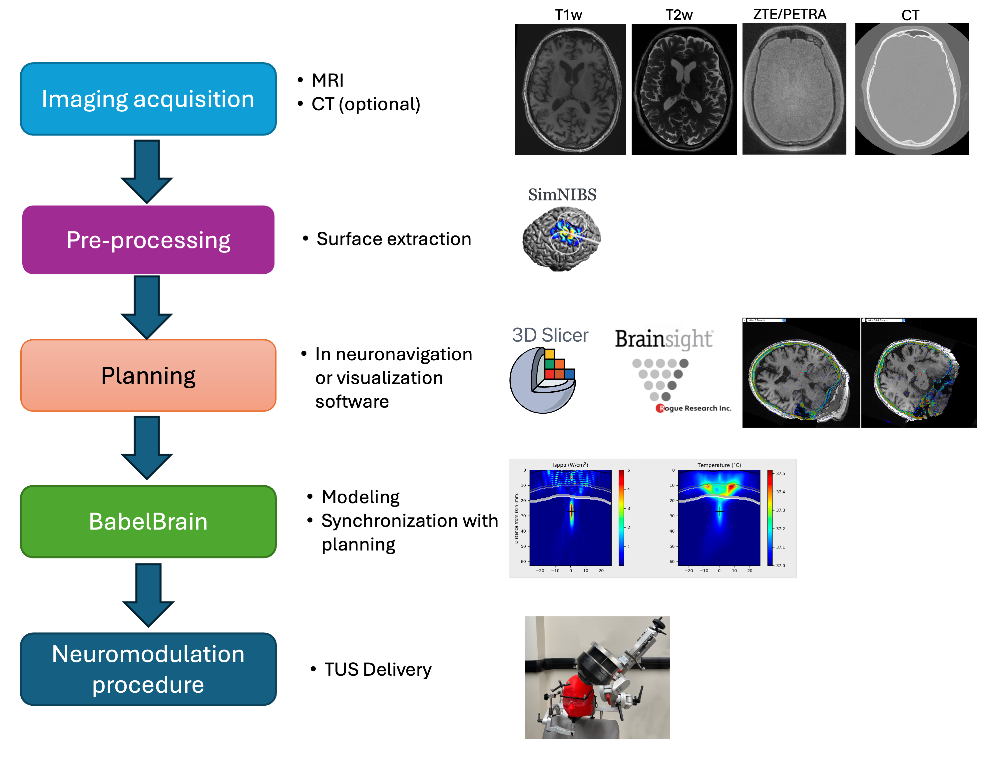

Pipeline description
BabelBrain takes 3D imaging data (MRI and, if available, CT) along with a trajectory indicating the location and orientation of an ultrasound transducer to target a location in the brain.

Currently, ten types of transducers are supported:
- Single. This is a simple focusing single-element transducer. The user can specify diameter, focal length and a frequency between 100 kHz and 1 MHz.
- H317. This is a 128-element phased array with a focal length of 135 mm and F#=0.9. The device is capable to operate at 250, 700 and 825 kHz.
- CTX_250. This is a device commercialized by the company BrainBox that has 4 ring elements, with a focal length of 63.2 mm and F# = 0.98, and operates at 250 kHz. The system can steer the focal spot location (measured by the center of half-peak intensity or -3dB) from 25 to 60 mm from the outplane of the device.
- CTX_500. This is a device commercialized by the company BrainBox that has 4 ring elements, with a focal length of 63.2 mm and F# = 0.98, and operates at 500 kHz. The system can steer the focal spot location (measured by the center of half-peak intensity or -3dB) from 33 to 80 mm from the outplane of the device.
- DPX_500. This is a device commercialized by the company BrainBox that has 4 ring elements, with a focal length of 144.9 mm and F# = 2.26, and operates at 500 kHz. The system can steer the focal spot location (measured by the center of half-peak intensity or -3dB) from 50 to 120 mm from the outplane of the device.
- H246. This is a flat ring-type device that has 2 annular elements, with a diameter of 33.6 mm and operates at 500 kHz. It offers some degree of focusing by using two transducer elements.
- BSonix. These are devices commercialized by the company Brainsonix at fixed focal lengths of 35, 55, 65 and 80 mm as reported in Schafer et al..
- I12378. This is a 128-element device operating at 650 kHz with a focal length of 72 mm and F#=0.7.
- ATAC. This is a 128-element device operating at 1 MHz with a focal length 53.2 mm and F#=0.9.
- REMOPD. This is a 256-element flat 2D array commercialized by the company Fraunhofer IBMT capable to operate at 300 and 490 kHz with a diameter of 58 mm.
The specific capabilities of each transducer are considered during the simulations.
Overall workflow
The typical TUS workflow working with BabelBrain is shown below

The next sections cover these steps